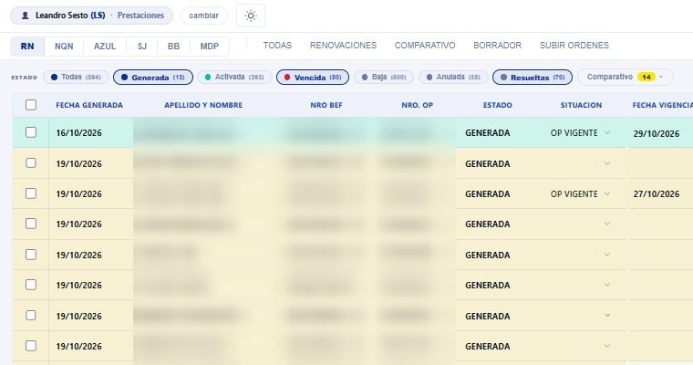
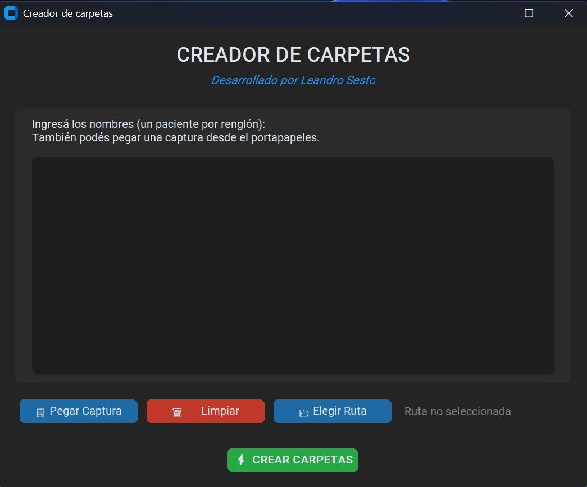
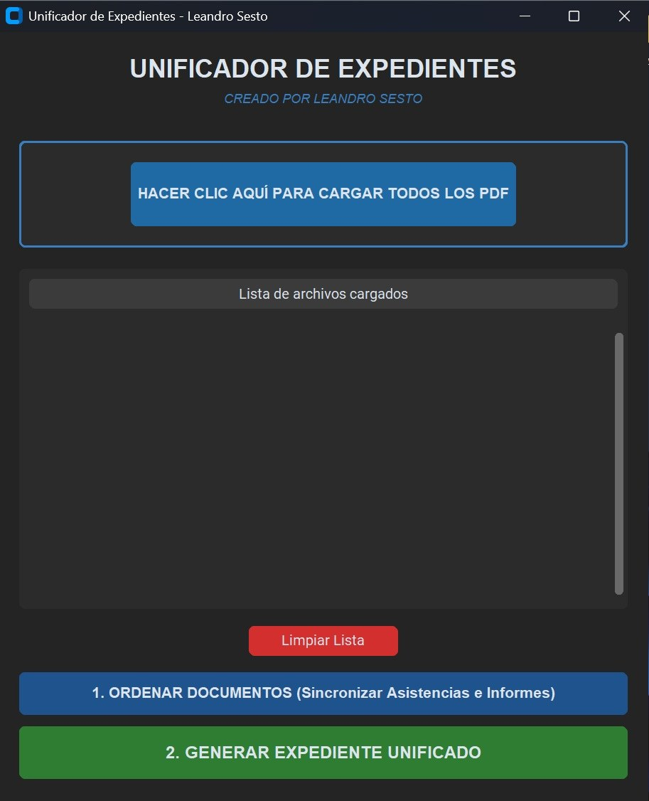

Copiar y pegar entre planillas
Datos que viven en un Excel, se vuelven a escribir en otro y terminan en un sistema interno. Cada traspaso es tiempo perdido y una chance de equivocarse.
Automatización de tareas administrativas · Remoto en toda Latinoamérica
Automatizo las tareas administrativas repetitivas de tu empresa: planillas, PDFs, carpetas, informes. Sin cambiar las herramientas que ya usas y con precio cerrado antes de empezar.

¿Te suena familiar?
Datos que viven en un Excel, se vuelven a escribir en otro y terminan en un sistema interno. Cada traspaso es tiempo perdido y una chance de equivocarse.
Reunir PDFs, ordenarlos, numerarlos y comprobar que no falte ninguno. Una tarea que consume horas y exige atención total.
El mismo reporte, con los mismos pasos, cada cierre. Si depende de una sola persona, también depende de que ese día no falte.
El costo no aparece en ninguna factura: son horas de personas capacitadas dedicadas a tareas que una máquina hace en segundos. Cada mes que pasa, esas horas se pierden otra vez.
Cómo trabajo
Me muestras cómo haces hoy la tarea, compartiendo pantalla. No necesitas preparar nada ni conocer términos técnicos.
Te respondo con claridad si es automatizable, cuánto tiempo te ahorraría y cuánto cuesta. El precio es cerrado, por proyecto completo.
Entrego la solución probada, con documentación y un período de soporte posterior para ajustar cualquier detalle.
Trabajos realizados
Desarrollados para el área administrativa de una empresa de salud de Mar del Plata, y en uso diario.
Panel de gestión

Aplicación de escritorio

Procesamiento de documentos
Para que lo pruebes
Una herramienta para Windows que une PDFs en tu propia computadora, sin subir documentos a servidores de terceros. Arrastras los archivos, reordenas o giras las páginas, y listo. Sin límite de archivos ni suscripciones.
Descargar para Windows (.exe)Es una muestra de cómo trabajo: herramientas simples, que resuelven una cosa y la resuelven bien.
Sobre mí
Trabajo en el área administrativa de una empresa de salud en Mar del Plata, y las soluciones que ves en esta página las desarrollé para resolver problemas reales de mi propio día a día. Conozco la tarea desde el lado de quien la hace, y por eso sé qué automatizar y qué no.
Programo en Python y Google Apps Script, pero no necesitas saber nada de eso. Lo que importa es que tu equipo recupere tiempo y que los datos queden bien.
Herramientas: Python · Google Apps Script · Google Sheets y Drive · Procesamiento de PDF y OCR · Integración de sistemas
Lo que puedes esperar
Sabes cuánto cuesta el proyecto completo antes de empezar. Sin horas que se acumulan ni cargos sorpresa.
Siempre que es posible uso herramientas gratuitas como Google Apps Script, para que no pagues licencias ni servidores.
Trabajo con las APIs oficiales de Google y solo accedo a lo que tú autorizas.
Todo se entrega documentado y con registro de errores. Si algo se desajusta en el período de soporte, lo corrijo sin costo.
Preguntas frecuentes
Depende de la tarea. Cada proyecto tiene un precio cerrado que te informo después del diagnóstico inicial, antes de que decidas nada. Si no es automatizable o no conviene, también te lo digo.
Sí. Trabajo de forma remota con empresas de toda Latinoamérica. Las reuniones son por videollamada y todo se entrega en formato digital.
Es una videollamada de 15 minutos. Me compartes tu pantalla, me muestras cómo haces la tarea hoy y te digo si se puede automatizar, cuánto tiempo te ahorraría y qué necesitaríamos.
Sí. La conexión usa las APIs oficiales de Google y credenciales cifradas. Solo se accede a los documentos que tú autorices.
En la gran mayoría de los casos, no. Aprovecho Google Apps Script o programas que corren en tu propia computadora. Si un caso requiere otra cosa, te propongo la opción más económica antes de empezar.
Todo se entrega con documentación y registro de errores, para saber con exactitud qué falló. Durante el período de soporte posterior a la entrega corrijo cualquier desajuste sin costo adicional.
Primer paso
En 15 minutos te digo si se puede automatizar y cuánto tiempo te ahorraría. Sin costo y sin compromiso. Respondo en el día hábil.
Te escribo en las próximas 24 horas hábiles para coordinar los 15 minutos de diagnóstico.